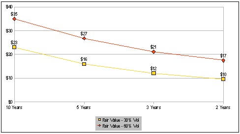
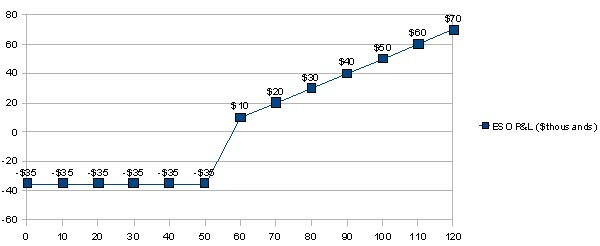
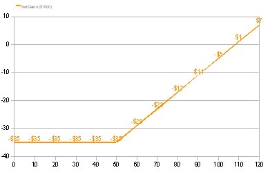
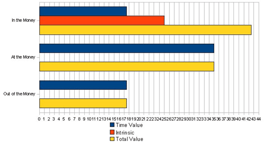

Employee stock options, or ESOs, represent one form of equity compensation granted by companies to their employees and executives. They give the holder the right to purchase the company stock at a specified price for a limited duration of time in quantities spelled out in the options agreement.
ESOs represent the most common form of equity compensation. In this tutorial, the employee (or grantee) also known as the "optionee", will learn the basics of ESO valuation, how they differ from their brethren in the listed (exchange traded) options family, and what risks and rewards are associated with holding these during their limited life. Additionally, the risk of holding ESOs when they get in the money versus early or premature exercise will be examined.
In Chapter 2,we describe ESOs at a very basic level. When a company decides that it would like to align its employee interests with the aims of the management, one way to do this is to issue compensation in the form of equity in the company. It is also a way of deferring compensation. Restricted stock grants, incentive stock options and ESOs all are forms equity compensation can take. While restricted stock and incentive stock options are important areas of equity compensation, they will not be explored here. Instead, the focus is on non-qualified ESOs.
We begin by providing a detailed description of the key terms and concepts associated with ESOs from the perspective of employees and their self interest. Vesting, expiration dates and expected time to expiration, volatility pricing, strike (or exercise) prices, and many other useful and necessary concepts are explained. These are important building blocks of understanding ESOs – an important foundation for making informed choices about how to manage your equity compensation.
ESOs are granted to employees as a form of compensation, as mentioned above, but these options do not have any marketable value (since they do not trade in a secondary market) and are generally non-transferable. This is a key difference that will be explored in greater detail in Chapter 3, which covers basic options terminology and concepts, while highlighting other similarities and differences between the traded (listed) and non-traded (ESO) contracts.
An important feature of ESOs is their theoretical value, which is explained in Chapter 4. Theoretical value is derived from options pricing models like the Black-Scholes (BS), or a binomial pricing approach. Generally speaking, the BS model is accepted by most as a valid form of ESO valuation and meets Financial Accounting Standards Board (FASB) standards, assuming that the options do not pay dividends. But even if the company does pay dividends, there is a dividend-paying version of the BS model that can incorporate the dividend stream into the pricing of these ESOs. There is ongoing debate in and out of academia, meanwhile, about how to best value ESOs, a topic that is well beyond this tutorial.
Chapter 5looks at what a grantee should be thinking about once an ESO is granted by an employer. It is important for the employee (grantee) to understand the risks and potential rewards of simply holding ESOs until they expire. There are some stylized scenarios that can be useful in illustrating what is at stake and what to look out for when considering your options. This segment, therefore, outlines key outcomes from holding your ESOs.
A common form of management by employees to reduce risk and lock in gains is the early (or premature) exercise. This is somewhat of a dilemma, and poses some tough choices for ESO holders. Ultimately, this decision will depend on one's personal risk appetite and specific financial needs, both in the short and long term. Chapter 6 looks at the process of early exercise, the financial objectives typical of a grantee taking this road (and related issues), plus the associated risks and tax implications (especially short-term tax liabilities). Too many holders rely on conventional wisdom about ESO risk management which, unfortunately, may be loaded with conflicts of interest, and therefore may not necessarily be the best choice. For example, the common practice of recommending early exercise in order to diversify assets may not produce the optimal outcomes desired. There are trade offs and opportunity costs that must be carefully examined.
Besides removing the alignment between employee and company (which was the purportedly one of the intended purposes of the grant), the early exercise exposes the holder to a large tax bite (at ordinary income tax rates). In exchange, the holder does lock in some appreciation in value on their ESO (intrinsic value). Extrinsic, or time value, is real value. It represents value proportional to probability of gaining more intrinsic value. Alternatives do exist for most holders of ESOs for avoiding premature exercise (i.e. exercising before expiration date). Hedging with listed options is one such alternative, which is briefly explained in Chapter 7 along with some of the pros and cons of such an approach.
Employees face a complex and often confusing tax liability picture when considering their choices about ESOs and their management. The tax implications of early exercise, a tax on intrinsic value as compensation income, not capital gains, can be painful and may not be necessary once you are aware of some of the alternatives. However, hedging raises a new set of questions and resulting confusion about tax burden and risks, which is beyond the scope of this tutorial.
ESOs are held by tens of millions of employees and executives in
Let's begin with the participants – the grantee (employee) and grantor (employer). The latter is the company that employs the grantee or employee. A grantee can be an executive, or a wage or salaried worker, and is also often referred to as the optionee. This party is given the ESO equity compensation, usually with certain restrictions. One of the most important restrictions is what is known as the vesting period. The vesting period is the time that an employee must wait in order to be able to exercise ESOs. Exercise of ESOs, where the optionee notifies the company that he or she would like to buy the stock, allows the optionee to buy the referenced shares at the strike price indicated in the ESO options agreement. The acquired stock (in whole or parts) can then be immediately sold at the next best market price. The higher the market price from the exercise or strike price, the larger the "spread" and, therefore, the bigger the compensation (not "gain") the employee earns. As you will see later, this triggers a tax event whereby the ordinary compensation tax rate is applied to the spread.
For example, if your ESOs have an exercise price of $30, when you exercise your ESOs you will be able to acquire (buy) the specified shares of stock at $30. In other words, no matter how much higher the market price for the stock is, at the point of exercise you get to buy the stock at the strike price, and the bigger the spread between strike and market price, the bigger the earnings.
Vesting
The ESOs are considered vested when the employee is allowed to exercise and purchase stock, but the stock may not be vested in some (rare) cases. It is important to read carefully what is known as the company's stock options plan and the options agreement to determine the rights and key restrictions available to employees. The former is put together by the board of directors and contains details of the rights of a grantee or optionee. The options agreement, however, will provide the most important details, such as the vesting schedule, the shares represented by the grant and the exercise or strike price. Of course, the terms associated with the vesting of the ESOs will be spelled out, too. (For more on executive compensation limits, read How Restricted Stocks And RSUs Are Taxed.)
ESOs typically vest in portions across time in the form of a vesting schedule. This is spelled out in the options agreement. ESOs will normally vest at predetermined dates. For example, you may have 25% vest in one year, (one year from the grant date) another 25% may vest in two years, and so on until you are considered "fully vested". If you don't exercise your options after year one (the 25% that vested in that year), you then have a cumulative growth in percent vested, and now exercisable options, across the two years. Once all have vested, meanwhile, you can then exercise the entire group, or you can exercise part of the fully vested ESOs. (For more insight, read How do I "vest" something?)
Paying for the Stock
In other words, at this point you could request to exercise 25% of 1,000 shares granted in the ESO, meaning you would get 250 shares of stock at the strike price of the option. You will need to come up with the cash to pay for the stock, but the price you pay is the strike price, not the market price (withholding tax and other related state and federal income taxes are deducted at this time by the employer and the purchase price will typically include these taxes to the stock price purchase cost).
All details about vesting of ESOs (should you be granted some or have some currently), can again be found in what is called the "options agreement" and "company stock plan". Be sure to read these carefully, as fine print can sometimes hide important clues about what you may or may not be able to do with your ESOs, and exactly when you can begin to manage them effectively. There are some tricky issues here, especially regarding termination of employment (either voluntarily or involuntarily).
If your employment is terminated, unlike vested stock, you will not be able to hold on to your options before or after they are vested. While some consideration may be given to circumstances surrounding why employment was terminated, most often your ESO agreement is terminated with employment, or just after. If options have vested prior to termination of employment, you may have a small window (known as a grace period) to exercise your ESOs. If you are hedging positions, the probability of employment termination occurring is an important consideration. This is because if you lose the equity you are attempting to hedge, you are left holding hedges that are exposed to their own risk (having no equity offset). If you have losses on your hedges and gains on your ESOs that cannot be realized, a large risk of loss is created. (Learn more about how hedging works in Hedging In Layman's Terms.)
The ESO Spread
Let's take a closer look at the so-called "spread" between the strike and the stock price. If you have ESOs with a strike of $25, the stock price is at $50, and you want to exercise 25% of your 1,000 shares allowed per your ESOs, you would need to pay $25 x 250 for the shares, which is equal to $6,250 before taxes. At this time, however, the value in the market is $12,500. Therefore, if you exercise and sell at the same time, the shares you acquired from the company from the exercise of your ESOs would net you a total of $6,250 (pretax). As mentioned above, however, "gain" of intrinsic (spread) value is taxed as ordinary income, all due in the year you do the exercise. And what's worse, you receive no tax offset from the loss of time or extrinsic value on the share of the ESOs exercised, which could be considerable.
Returning to the issue of taxes, if you have a 40% tax rate applied, you not only give up all the time value in an exercise, but you give up 40% of the intrinsic value capture in the exercise. So that $6,250 now shrinks to $3,750. If you do not sell the stock, you are still subject to the tax upon exercise, an often overlooked risk. Any gains on the stock after exercise, however, would be taxed as capital gains, long or short term depending on how long you hold the acquired stock (You would need to hold the acquired stock for one year and a day following exercise to qualify for the lower capital gains tax rate). (For more on capital gains taxes, see Tax Effects On Capital Gains.)
Let's assume your ESO has vested, or a portion of your grant (say 25% of 1,000 shares, or 250 shares) and you would like to exercise and acquire 250 shares of the company stock. You would need to notify your company of the intent to exercise. You would then be required you to pay the price of the exercise. As you can see below, if the stock is trading at $50 and your exercise price is $40, you would need to come up with $10,000 to purchase the stock ($40 x 250 = $10,000). But there is more.
If these are non-qualified stock options, you would also have to pay withholding tax (covered in more detail in the section of this tutorial on tax implications). If you sell your stock at the market price of $50, you see a "gain" of $2,500 above the exercise price ($12,500 - $10,000), which is the "spread" (sometimes referred to as the "bargain element").
The $2,500 represents the amount the options are in the money (how far above the strike price (i.e. $50 - $40 = $10). This in-the-money amount is also your taxable income, an event looked at by the IRS as compensation increase, and thus taxed at ordinary income tax rates.
| Option Particulars | Price | Value |
|
XYZ Stock Price | $50 | $12,500 |
| XYZ ESO Strike Price | $40 | $10,000 |
| ESO Intrinsic Value | $10 | $2,500 |
| ESO Exercise "Gain" | $2,55 ($10 x 250) | $2,500 |
| Figure 1: A simple ESO exercise to acquire 250 shares with $10 intrinsic value |
Regardless of whether the acquired 250 shares are sold, the "gain" upon exercise is realized and triggers a tax event. Of course, once you acquire the stock, if there are any price changes, assuming you do not liquidate, this will produce either more gains or some losses on the stock position. The latter parts of this tutorial look at tax implications of holding the stock versus selling it immediately upon exercise. Holding part or all of the acquired stock raises some thorny issues regarding tax liability mismatching.
Intrinsic Versus Time Value
As you can see in the table above, the amount of intrinsic value is $10. This value, however, is not the only value on the options. An invisible value known as time value is also present, a value that is forfeited upon exercise. Depending on the amount of time remaining until expiration (the date the ESOs expire) and several other variables, time value can be larger or smaller. Most ESOs have a stated expiration date of up to 10 years. So how do we "see" this time value component of value?
You need to use a theoretical pricing model, like Black-Scholes, which will compute for you the fair value of your ESOs. You should be aware that the exercise of an ESO, while it may capture intrinsic value, usually gives up time value (assuming there is any left), resulting in a potentially large hidden opportunity cost, which may actually be larger than the gain represented by intrinsic value. (For more on how this model works, see Accounting and Valuing Employee Stock Options.)
The value composition of your ESOs will shift with movement of the stock price and time remaining until expiration (and with changes in volatility levels). When the stock price is below the strike price, the option is considered to be out of the money (also popularly known as "under water"). When at or out of the money, the ESO has no intrinsic value, just time value (the spread is zero when at the money). Since ESOs are not traded in a secondary market, you cannot "see" the value they truly have (since there is no market price like with their listed options brethren). Again, you need a pricing model to plug inputs into (strike price, time remaining, stock price, risk-free interest rates and volatility). This will produce a theoretical, or fair-value, price, which will represent pure time value (also known as extrinsic value).
| Option Particulars | Price | Value |
|
XYZ Stock Price | $30 | $7,500 |
| XYZ ESO Strike Price | $40 | $10,000 |
| ESO Intrinsic Value | $0 | $0 |
| ESO Extrinsic Value | $15 | $3,750 |
| Figure 1: Out of the money ESOs representing the right to buy 250 shares and with $15 assumed time value |
As you can see in Figure 2, making an exercise when the ESOs are out of the money (stock price below strike price) makes no financial sense at all. In our example where there is $15 of time value per share ($15 x $250 = $3,750), you would give up $3,750 in time value. The stock price, however, could be bought at $30 in the open market when the exercise price is $40, so there is no need to exercise the option and give up your time value. You could simply buy the stock for $30 and keep your ESOs and actually have a much larger upside potential with no additional risk.
What to Expect in the Terms of the Grant
With most ESOs, you can expect certain uniform conditions regarding basic terms. For example, the exercise price is usually (but not always) designated as the market price of the stock on the day of the grant. Also, the vesting period is probably going to be spread out across a number of years with a cumulative exercisable amount with each partial vesting date. In other words, if ESOs were granted giving you the right to buy 1,000 shares of stock and they vest at 25% per year following a grant date, three years from the grant date you would be able to buy 75%, or 750 shares of the stock.
You would need one more year to vest the remaining 250 shares. Finally, while typically a cash exercise is the only route allowed by some employers, others now allow cashless exercise. Here, an arrangement might be made with a broker or other financial institution to finance the exercise on a very short-term basis (including withholding tax due on an exercise) and then have the loan paid off with immediate sale of the all or part of the acquired stock.
The biggest difference between listed options and ESOs is that ESOs are not traded. This is the difference that keeps academics publishing articles about how to put a fair value on these assets. In other words, they have no quoted value, unlike other options trading in the world's largest exchanges. All reference prices, therefore, arise from theoretical pricing models, like Black-Scholes, except at expiration when the value is the amount the ESO is in the money (price above strike).
We saw in the previous chapter that this can lead to "invisible" pricing – if the options are out of the money (stock price is below strike price) - when the value is pure time value and only viewable with a pricing model. Most ESO holders with little experience in options trading might mistake this to mean their options have no value. But this is an unfortunate misunderstanding, especially if the options have a little intrinsic value and they attempt to capture that with an early or premature exercise. Unaware of the lost time value in an exercise, you are unknowingly being penny wise and pound foolish. In the early life of your ESO,you will have a significant time value component that is lost upon exercise, so you should value your ESOs properly before making any financial decisions about exercise to capture intrinsic value.
The Value of Your ESO
Without a market price reference point, it is difficult to "see" the value. Since many ESOs are granted with 10 years in life, you don't have listed options trading with an equal amount of time on them for making a comparison either. LEAPS equity options (listed long-dated options), have expiration dates as far as two years out in time, but this will only help if your ESOs have two years or less in time remaining. In other words, there is a big gap between two and 10 years that leaves you without market price reference points (and these market prices may not be the best proxy prices anyway). Models, therefore, are necessary and your employer is required on the grant date to specify a theoretical price on their balance sheet and in your options agreement. Be sure to request this information and how they determined the value of your ESO.
Unlike listed options, furthermore, the time to expiration input in theoretical pricing models may be shortened, or discounted, based on employer determined assumptions about expected length of employment and expected time holding before exercise. This will lower the theoretical value of your ESOs. Assumptions about volatility can do the same thing if the company makes lower than normal levels of volatility assumptions, especially when combined with discounted time to expiration, so be careful which model you are getting your theoretical values from.
It is a good idea to get several estimates from other models to compare to your company's valuation. The lower the value of either time to expiration or volatility, the lower will be your stated theoretical value. When hedging is factored into the equation, the assumptions used by employers can be completely erroneous and hedging itself may actually add theoretical value.
Any partial hedging of your ESOs may mean that you hold your options longer, even all the way to term, so hedging has an added benefit in allowing you to hold longer, thus raising the theoretical value. Of course, hedging may allow you to capture most of the time value that is lost typically by most ESO holders looking only at the intrinsic value capture end game.
Listed Options Specifications
Listed, or exchange traded stock options, are standardized so all terms are alike whether you are trading IBM or Microsoft or any other company's stock options. The specifications are easier to understand. If you own a call option, for instance, you have the right to buy 100 shares of stock at a specified price (strike price) for a limited amount of time (the time remaining until expiration of that listed option). If you hold a put option, it gives you the right to sell 100 shares at the strike price until the put option expires. The time remaining depends on the expiration month of the option. While ESOs do have similar rights to listed options, the right to buy stock is not standardized and is spelled out in the options agreement. There are no actual options with standardized multipliers of 100, as with listed options.
Last Day of Trading – Expiration
For all listed stock options in the U.S., the last day of trading is the third Friday of the calendar month of the option contract. At the close of trading on that Friday, the options no longer trade and are automatically exercised if more than .01 in the money. If exercised, you will receive either a short stock position (if you owned the put) or a long stock position (if you owned the call). If you had 100 shares of long stock to begin with, instead of 100 shares long stock position, you would now have 200 because the automatic exercise would get you additional shares. If you had the 100 shares and owned a put, you would get 100 short shares that would offset your 100 long shares, leaving you flat. (Learn more about the expiration process in Stock Option Expiration Cycles.)
Much of this carries over to ESOs, except that ESOs are not granted in number of options but shares you have the right to buy. They are granted with a number of shares represented by the grant. That is, you are granted ESOs with the "right to purchase 1,000 shares of XYZ stock." Therefore, if you held these until expiration (10 years in most cases), you would notify your employer to exercise your ESOs upon expiration, but you should consult your stock plan and options agreement for more details about the specific requirements as they may differ company to company. You must notify your intent to exercise before expiration if you would like to acquire 1,000 shares long or you will forfeit that right. Unlike listed options, which are automatically exercised if in the money by more than .01 at expiration, ESOs are not automatically exercised.
Strike Prices
Since listed options have standardized strike prices, trading in increments of $2.50, $5 and $10, depending on the price of the underlying security (generally, higher prices trade with higher increments), there is no confusion about strikes. However, with ESOs, since the strike price is usually set by the market, you could have any strike price. On the grant date, the strike typically would be the market close price, which means there are no standardized strikes, only randomly set prices determined by what the closing prices happen to be. However, the company may back-date options, as occurred in many abuse cases, setting a more favorable date for determining the strike, such as one that makes the strike lower than the market price upon grant, thus creating an instant "profit" for the holders.
Acquired Stock Restrictions
With listed call options, when you exercise and get the stock you can dispose of it as early as markets begin trading again in that stock. However, with acquired stock through an exercise of your ESOs, you may not be able to sell your stock. Even if your ESOs have vested (so now you can exercise them), the stock you acquire may not be vested. This restriction will prevent you from liquidating the stock for a period of time that can expose you to risk of the loss on your stock position, and after having paid income tax on the exercise spread value. If you are not hedging, then you face a double dilemma.
When you exercise an ESO, if there is intrinsic value, you are taxed at ordinary rates on what is deemed compensation income, due in the tax year of the exercise. Meanwhile, if you are restricted from selling your stock immediately, you can lose money on this position and, while this would result in capital loss for that tax year, you can only apply up to $3,000 per year as a write-off against income. Therefore, you may not be able to offset ordinary income tax liability resulting from the exercise for many years due to the limited annual offset allowed on capital losses. Hedging with listed options, however, opens up some great opportunities to better manage tax liabilities both before and after exercise, a topic beyond the scope of this tutorial.
Valuation of ESOs is a complex issue but can be simplified for practical understanding so that holders of ESOs can make informed choices about management of equity compensation.
Valuation
Any option will have more or less value on it depending on the following main determinants of value: volatility, time remaining, risk free rate of interest, strike price and stock price. When an option grantee is awarded an ESO giving the right (when vested) to buy 1,000 shares of the company stock at a strike price of $50, for example, typically the grant date price of the stock is the same as the strike price. Looking at the table below, we have produced some valuations based on the well known and widely used Black-Scholes model for options pricing. We have plugged in the key variables cited above while holding some other variables (i.e. price change, interest rates) fixed to isolate the impact of changes in ESO value from time-value decay and changes in volatility alone.
First of all, when you get an ESO grant, as seen in the table below, even though these options are not yet in the money, they are not worthless. They do have significant value known as time or extrinsic value. While time to expiration specifications in actual cases can be discounted on the grounds that employees may not remain with the company the full 10 years (assumed below is 10 years for simplification), or because a grantee may conduct a premature exercise, some fair value assumptions are presented below using a Black-Scholes model. (To learn more, read What Is Option Moneyness? and How To Avoid Closing Options Below Instrinsic Value.)
Assuming you hold your ESOs until expiration, the following table provides an accurate account of values for an ESO with a $50 exercise price with 10 years to expiration and if at the money (stock price equals strike price). For example, with an assumed volatility of 30% (another assumption that is commonly used, but which may understate value if the actual volatility across time turns out to be higher), we see that upon grant the options are worth $23,080 ($23.08 x 1,000 = $23,080). As time passes, however, let's say from 10 years to just three years to expiration, the ESOs lose value (again assuming price of stock remains the same), falling from $23,080 to $12,100. This is loss of time value.
| Theoretical Value of ESO Across Time - 30% Assumed Volatility | ||||
| Stock Price | $50 | $50 | $50 | $50 |
| Volatility | 30% | 30% | 30% | 30% |
| Time Remaining | 10 Years | five years | three years | two years |
| Risk-Free Rate | 3% | 3% | 3% | 3% |
| Strike Price | $50 | $50 | $50 | $50 |
| Fair Value | $23.08 | $15.99 | $12.10 | $9.69 |
| Total Value | $23,080 | $15,990 | $12,100 | $9,690 |
| Figure 3: Valuation of an ESO, assuming at the money, while varying time remaining. Assumes non-dividend paying stock. | ||||
|  |
| Figure 4: Fair value prices for an at-the-money ESO with exercise price of $50 under different assumptions about time remaining and volatility. |
| Theoretical Value of ESO Across Time – 60% Assumed Volatility | ||||
| Stock Price | $50 | $50 | $50 | $50 |
| Volatility | 60% | 60% | 60% | 60% |
| Time Remaining | 10 Years | five years | three years | two years |
| Risk-Free Rate | 3% | 3% | 3% | 3% |
| Strike Price | $50 | $50 | $50 | $50 |
| Fair Value | $35.34 | $26.76 | $21.20 | 17.45 |
| Total Value | $35,340 | $26,760 | $21,200 | $17,450 |
| Figure 5: Valuation of an ESO, assuming at the money, while varying volatility | ||||
When you hold ESOs, as an employee you will have certain risks at all times, contrary to what you might believe or be told. Recall from previous chapters of this tutorial that you hold options with an expected time to expiration, therefore, your ESOs can have significant time value even if out of the money (i.e. under water). It would depend on how far under water and how much time remaining to expiration. (What's your risk tolerance level? Find out in Risk Tolerance Only Tells Half The Story.)
The Risks of Owning ESOs
We will work with the common 10-year ESO grant term to expiration. As soon as you receive the grant from your employer, you typically would have no intrinsic risk because the option is granted at the price of the stock, usually at the close of trading the day of the grant.
Therefore, your exercise strike, or strike price, is equal to the close price on the day of the grant and your ESOs are at the money from the start. Many believe they have no value since you cannot sell them and can only reap a profit from the stock price getting above the strike price, or getting in the money. Once that occurs, intrinsic value appears and you can easily determine their value (intrinsic). But the mistake is not realizing that there is time value on the option, as well, even on the grant day. And that represents a large opportunity cost if you are prematurely exercising.
In fact, upon grant, your ESOs will have the highest time value (assuming volatilities don't jump soon after acquiring the options). So with such a large time value component, you actually have value, and thus you have value at risk. Most traditional ESO planning ignores this value at risk, which is unfortunate. Remember, time value, not just intrinsic value, is your compensation, so losing time value is like bleeding away part of your pay. Your ESO is valued by your employer on grant day for expense purposes, so time value is being counted on its balance sheets. For reference's sake, you should be doing the same. After receiving an ESO grant from your employer, it is important for you to understand how to plan the management of your potential risks and rewards while holding the options, including time value at risk. (To learn more, see The Importance Of Time Value.)
Holding Until Expiration
As you can see in Figure 6 (below), the potential gain and loss from holding an ESO with strike of $50 to expiration (assuming a 60% volatility level and 10 years to expiration), is rather grim. If the stock is exactly where it was on grant day, you lose $35,000 in time value. You are left with nothing. You have gambled, in effect, on a stock price rise that did not occur. Think of how often companies' shares go down - not up - in value.
If you are lucky enough to have the stock price at $110 by expiration, you would have $60,000 in value on the ESOs ($110,000 - $50,000 = $60,000 spread gain). However, you bled away the $35,000 in time value by holding it to expiration, leaving a net "gain" of just $25,000 pretax. Once you factor in the ordinary income tax applied to "gains" from exercising (applied to the $60,000, not $25,000), you are left with $36,000 (40% x $60,000 = $24,000 in compensation tax paid at exercise to employer). If you deduct lost time value, you are left with net after tax gain of just $1,000 in gains ($36,000 - $35,000 = $1,000).
What is not understood well by ESO holders is the bleeding of time value, which is in reality a loss, but not tax deductible. While there are ways to hedge the time value and capture it as potential income, very few financial planners or wealth managers have the experience to go down that road. When this is properly done, however, it is possible to take cash out of your ESOs through selling listed calls, a subject that is beyond the scope of this tutorial.
|  |
| Figure 6: ESO P&L with $50 strike and 10 years to expiration upon grant. Numbers have been rounded to nearest thousand. |
|  |
| Figure 7: ESO representing 1,000 shares of stock and having an exercise price of $50 and fair value of $35,000 with 10 years to expiration. |
Before looking at some of the issues surrounding not holding to expiration, let's take a look at the outcome of a hold until expiration in light of the time value and tax costs. If you just hold your position to expiration and then exercise, in Figure 7 you can see a schedule of after-tax, net time-value expiration gains and losses. The plot of values shows that at a price of 120 upon expiration, the actual gains are just $7,000. Gross gains are $70,000 (the value of the options at expiration). However, $35,000 in time value was bled away during the 10-year period assumed here, and $28,000 in compensation taxes were paid on the gross "gain" of $70,000 upon exercise. Take out $35,000 in time value and you are left with $7,000 in net gains. Note that breakeven price is at $109 for the stock price when you include the time value loss in the equation, as seen in Figure 7.
When an exercise is requested, the ESO holder must pay the strike price ($50 in this case for the stock, or $50,000 plus the $28,000 in taxes, or $78,000) even if the stock is not sold. If the stock is liquidated as part of the exercise, he or she would receive $120,000 in stock. When we subtract $78,000 (purchase and tax), the balance is $42,000. But the options had initial value of $35,000, which was lost by holding to expiration, leaving a net gain of $7,000.
Selling to Cover
It is possible to do a "sell to cover" exercise notification, which may be possible with some employers, allowing you to sell enough shares of stock to pay the exercise price and taxes upon exercise. Finally, if you take out the time value aspect to the ESO, the net gain is $42,000, which is what most look at when considering the question of exercise. But it must be stressed that the time value is a real value that is lost in the process. Any self-respecting trader of listed options would be laughed out of the business if he or she ignored the lost value known as time value.
As common way to reduce risk and lock in gains, the early or premature exercise should be carefully considered, since there is a large potential tax bite and big opportunity cost in the form of forfeited time value, as we saw in risk of holding to expiration in Chapter 5. Here, the process of early exercise at a basic level is outlined and financial objectives and risks explained.
When an ESO is granted, it has a hypothetical value. In the case from the previous segment, this value was $35,000. This is pure time value, and it decays at a rate known as theta (the rate of time value decay, which is a square root function of time remaining). So the option is not worthless. If there were a listed option with 10 years to expiration, it too would have significant value. (For more on Theta, see Options Greeks: Theta Risk and Reward.)
Value Compensation
Assume you hold ESOs unhedged worth, upon grant, about $35,000, using again our case from above. You may believe in the prospects for the company, and therefore you don't care about the stock price and your ESOs in the short run. Holding them until expiration is your simple plan, and if the stock price goes your way, you certainly may have gotten the most value from holding (although not necessarily given tax and time value loss considerations). But you might make nothing as well.
Value Composition for In, Out and At the Money ESO Option With Strike of $50 (Prices in Thousands)

Figure 8: A hypothetical ESO option with the right to buy 1,000 shares.The numbers have been rounded to nearest thousandth
Even if you began to gain intrinsic value with a price rise, you will be trading off extrinsic value along the way (although not proportionately). For example, taking an example of an in-the-money ESO with a strike/exercise price of $50 with the stock now at $75, there will be less time value and more intrinsic value, and more value overall. In Figure 8 (top set of bars), the red (intrinsic value) bar shows $25,000 in intrinsic but time value has dropped to $17,500 for the in-the-money-options.
The out-of-the-money options (bottom set of bars) show only pure time or extrinsic value, lower at $17,500 from those that are at the money (middle set), with a value of $35,000. The more an option is out of the money, the less value it has (just time value if out of the money). In other words, as options get more in the money and acquire more intrinsic value, they give up some time value, as shown in Figure 8. The intrinsic value is now value at risk. Therefore, many holders will look to lock in this gain (or part of it), and will give up any time value while incurring a heavy tax bite. That is the tradeoff.
The Value of Time
To avoid giving back intrinsic value "gain" on an ESO, holders will exercise early, known as a premature exercise, and acquire the stock at the strike price specified in the options agreement. Let's say it is $50 and the stock is trading at $75. The holder would like to lock in the $25 spread between the stock price and the exercise/strike price. By notifying the company that he or she would like to exercise the ESOs (let's say 1,000 shares), the company requires you to pay the price of the stock $50,000 plus withholding of $10,000 (40% x $25,000 gain on stock). Therefore, you must come up with $60,000 to do the exercise. Once you have the stock, you can immediately sell it, and take in the full value (after tax) of $15,000. But as we have seen above with the risks of holding ESOs, you have given up a big chunk of time value, which theoretically means you have made less than the after-tax gain of $15,000. The tax bite is big, as is the time value forfeiture. In fact, it's probably bigger than the actual after-tax gains.
Taxes are never a fun, or funny, topic but when you can demonstrate how much you can defer and ultimately reduce in taxes when you avoid the premature exercise, it may bring tears to your eyes if you learned this too late, especially since alternatives do exist in the form of hedging.
Tax Liabilities for ESOs
The biggest downside of premature exercise is the big tax event it induces, along with the lost time value. You are taxed at ordinary rates on the intrinsic value "gain" (the spread between strike price and stock price, if options are above water) and that tax can be as high as 40%. Worse, it is all due the same tax year and paid upon exercise. If you have capital losses elsewhere in your portfolio, furthermore, you can apply only up to $3,000 per year of these losses against these compensation gains as an offset of the tax liability. So, it is hard to reduce the liability much once the premature exercise is done. And once it is done, it cannot be undone. (Make the most of your tax return; read Give Your Taxes Some Credit.)
Now that you have acquired stock that presumably has appreciated in value (spread between stock price and exercise price), you are faced with the choice of either liquidating or holding. Here, it can get even more risky. Maybe you exercised and planned to liquidate. In that case, assuming you don't have a change in the price of the stock from date of the exercise, there is no change in outcome. You have your after tax-gains locked in and you can do what you would like with them.
But if you hold the stock, or part of it, and then you liquidate with any gains (above the stock price upon exercise day, (which is now your basis price), you may incur additional tax liabilities in the form of short-term capital gains. They are owed in the same year you paid the compensation tax. You have to hold the shares for longer than one year and one day from the date of exercise to get the lower, long-term capital gains rates. Therefore, you may end up paying two taxes - compensation and capital gains. So, generally speaking, once an exercise is done, any gains in that tax year are taxed at the short-term capital gains rate. If you have to prematurely exercise, it is smart to diversify your gains into other assets, preferably assets that are not correlated, to avoid capital losses, which are not going to help much in terms of offsets.
An Example
For example, another scenario is worth considering here that many ESO holders may unfortunately find themselves facing. Let's say you have ESOs giving you the right to buy 1,000 shares of XYZ stock at $50 and the stock is trading at $75 with five more years until expiration. You are worried about stock market prospects and you decide to exercise your ESOs to lock in the $25 per share profit (intrinsic) on the ESOs. When you give the premature exercise notice and get the stock at $50, you decide to leave some (half of the stock) on the table to hedge your bets for more upside gains. Meanwhile, you put your stock sale proceeds (from the other half) in CDs. (Do CDs deliver in any market? Read Are CDs Good Protection For The Bear Market to find out.)Suppose you sold 500 shares at $75 for a $12,500 "gain" following your full exercise ($75 - $50 = $25 x 1,000 = $25,000). In this case, you would net after-tax "gains" of $2,500 (remember, you paid compensation tax on the intrinsic for the full 1,000 shares, even if you sell only 500). Meanwhile, you are holding 500 shares bought at $50 still, with a basis at $75, with $12,500 in unrealized gains (but tax paid for). But then, let's say you subsequently experience a drop in the stock price back to $50 from $75 before the end of the year. The second unsold position has now "lost" (or given back) $25 per share, or $12,500, since you acquired the shares through exercise (that lost value was already taxed as well). Now you have lost $12,500, and if you liquidate, you can only declare these losses as capital gains losses up to $3,000 in that same tax year, with the rest applicable across future tax years up to $3,000 per year.
Therefore, taken together with tax implications, you have paid $10,000 in compensation taxes on the full exercise, locked in $2,500 in after-tax gains through the sale of 500 shares after exercise, and made nothing on the second half of the 1,000 shares (yet have losses of $12,500, up to $3,000 of which you can write off that year and subsequent years). To recap, you realized $12,500 with the sale of 500 shares, paid $10,000 in compensation tax on $25,000 exercise "gain", made nothing on the second 500 shares as price went back to $50, but have $3,000 you can use as tax offset.
So, because you hedged by liquidating half, you kept your after tax gains to $5,500. But this does not count lost time value from the early exercise, which presumably would be about one-third of the initial fair value of the options, perhaps as much as $10,000. Furthermore, you no longer have potential to gain from upside movement in the stock. Had you held you position - a worst-case scenario - you would have paid $10,000 in tax on exercise and been left with your compensation, revealing just how important tax issues are to ESO holders.
Unexpected Fees
Other issues with early or premature exercise involve coming up with the money to make the exercise and acquire the stock (and pay the tax). As we saw above, this can be quite high (you need to pay the $50,000 exercise plus $10,000 in tax to acquire the stock). Sometimes, however, employers will arrange for a "cashless exercise," whereby a broker will front the money to allow for the exercise. But here, you still have withholding removed once the exercise occurs. The income (intrinsic value) is taxed as ordinary income. (Find the hidden fees in your portfolio to increase your rate of return in The Hidden Costs Of Investing.)
While there are other scenarios that can be explored, the point here is to demonstrate how tax events (of two types - compensation and capital gains/losses - can be quite burdensome and mismatched. Therefore, any decisions should be made with the aide of professional accounting help.
While premature exercise is a dependable solution to lock in intrinsic value, it can prove costly. Aside from the hold-to-the-bitter-end approach, few alternatives are offered by traditional financial advisors and wealth managers. Yet, it is becoming more prevalent to find some financial advisors (who have expertise in options) using listed options to both hedge downside intrinsic risk and capture and retain time value, plus better manage tax liabilities. It is even possible to cash out some equity through call selling along the way. Overall, it can be demonstrated that hedging approaches using listed options can maximize potential gains and minimize tax liabilities, even with worst-case tax rules applied.
The tax picture gets more complex when hedging approaches are applied, but if you become familiar with certain rules, such the IRS straddle rule (and an "identified straddle"), wash rule, constructive sale and a few others (be sure to consult a tax accountant on any matters regarding your ESOs), using simple put buying and call selling approaches correctly offers the possibility to construct alternative scenarios and get superior outcomes, and with less risk.
As we've seen, early exercise may not always be necessary to manage gains in an ESO portfolio. For example, when you buy listed puts on the same underlying stock in your ESO, you can put a floor on downside losses should you have intrinsic value in your ESOs. The cost of purchasing those puts can be offset by selling out of the money calls, known as a costless collar While just one example, it will remove some downside risk, simultaneously keeping some upside potential whenever putting on hedges of this type. Overall, hedging with puts and calls has special benefits in the tax liability area. (To learn more about collars, see Putting Collars To Work.)
Changes have occurred in the regulatory environment to make hedging of ESOs a much more attractive option for the retail trader, namely, much lower margin requirements for call selling. And the retail brokerage industry has gotten much better at making account setups, trading platforms, educational webinars and analytical tools available to new options traders, which makes the learning curve much shorter for trading listed options.
Most listed options are traded online with the click of a mouse, and you can set up your trades online and get prices on them with streaming real-time quotes, now provided by the brokers, for no cost except maybe an exchange fee. Years ago, you would have had to fork over quite a bit of money for real-time streaming options and stock price quotes boards, and with all the charting abilities. Not anymore. We live in a new world today, where service is the driving force of competition.
Whatever choices you make regarding your ESOs, be sure to consult an expert in taxes and in options trading. Most of the hedging concepts are relatively simple but application may not always be as easy as it may seem. And most importantly, get informed and ask the tough questions when you sit down with your financial planner or wealth manager. And be sure to ask them to explore non-traditional alternatives.
For more on employee stock options, read our related articles Get The Most Out Of Employee Stock Options and Mapping Out The Stock Options Landscape.
{kind=link}
{kind=link}
{kind=link}
{kind=link}